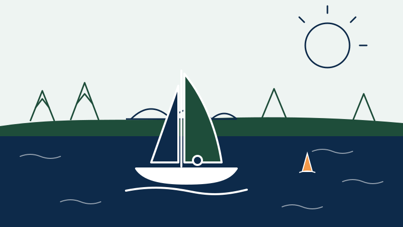

Nanterre à la Voile
Cinq jours d’initiation à la voile et de handivoile sur la Seine, ouverts à toutes et à tous. Un projet porté par un étudiant du Master STAPS Management des Organisations Sportives.
Découvrir l’événement
Qui suis-je ?
Je m’appelle Guilhem Thebault, j’ai 26 ans. Tout mon parcours universitaire s’est déroulé à l’Université Paris Nanterre : une licence d’économie-gestion, parcours espagnol, puis un master en management stratégique et international, et aujourd’hui le Master STAPS Management des Organisations Sportives, au cours duquel j’ai réalisé une année de césure.
Côté terrain, j’ai longtemps joué au football et au futsal avant de me tourner vers le volley-ball, à la suite de plusieurs blessures.
Mon expérience
Je travaille dans l’événementiel sportif, dans le secteur du nautisme et de la course au large. J’y fais de l’organisation d’événements et de la communication.
Mon projet professionnel
Grandir avec l’agence qui m’a recruté en alternance et l’aider à proposer ses services à tout type d’événement sportif et culturel, au-delà du nautisme.
Le Master STAPS Management des Organisations Sportives
Le parcours Management des Organisations Sportives (MOS) fait partie de la mention STAPS Management du sport. Il forme des cadres capables de piloter des structures sportives : clubs, fédérations, collectivités, entreprises et agences d’événementiel.
La deuxième année, qui peut se suivre en alternance, permet de conduire un projet concret en lien avec le monde professionnel, comme Nanterre à la Voile.
- Gestion et stratégie des organisations sportives
- Marketing, communication et partenariats
- Conduite de projets et d’événements sportifs
- Droit et économie du sport
- Expérience professionnelle en alternance ou en stage
L’Université Paris Nanterre
Située à l’ouest de Paris, l’Université Paris Nanterre accueille plus de 30 000 étudiants sur son campus principal, à deux pas de la gare Nanterre Université (RER A). Elle couvre les lettres, le droit, l’économie, les sciences humaines et les sciences du sport.
L’UFR STAPS y forme les futurs professionnels de l’enseignement, de l’entraînement, de l’activité physique adaptée et du management du sport. Le campus dispose de nombreux équipements sportifs et d’une vie associative active, dont l’association Novosport, partenaire de ce projet.